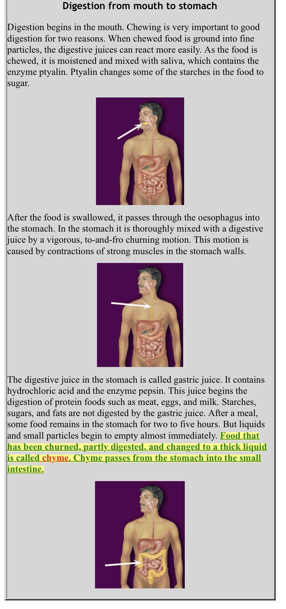

Notice the following four key Arabic words:
1- بين which means "between"
2- فرث which means "dissolved food" as we will clearly see below.
3- و which means "and".
4- دم which means "blood".

(http://www.elnaggarzr.com/index.php?l=ar&id=368&p=2&cat=384)
My translation:
Second: The formation of milk from between FARTH and blood inside the cattle:
Milk is essentially formed from proteins, carbohydrates, fat, and many other elements, and vitamins
and water. And all of this is extracted from the animal's nutrition (food), drink and blood,
which this Noble Verse has described through Allah Almighty's Statement: "from between FARTH فرث
and blood." And the FARTH is the substances that are eaten and are not completely digested in the gut,
and because of that it (the farth) is sometimes also called the gut's load (food), and when it is
extracted from the gut it is called ROUTH روث.
So when Allah Almighty Said that milk is formed from the PROCESSED FARTH (food or gut's load)
and the blood, He, the Almighty, basically Said that the substance of milk is essentially created
from the processed or dissolved substances that come from the GUT'S LOAD or FARTH (which is what we
humans call today proteins, vitamins, sugars, minerals and so on...) and BLOOD.
2- Google's Online Arabic-English dictionary contradiction:
Google erroneously translated فرث as dung [1]. But when we look up dung, it translates it as روث only [2].
3- From the Encyclopedic 10-Book Lisan Al-Arab [2] Dictionary:
الفَرْثُ: السِّرْجينُ، ما دام في الكَرِشِ، والجمع فُرُوثٌ. ابن سيده: الفَرْثُ السِّرْقِينُ، والفَرْثُ والفُراثة: سِرْقِينُ الكَرشِ.
وفَرَثْتُها عنه أَفْرُثُها فَرْثاً، وأَفْرَثْتُها، وفَرَّثْتُها، كذلك، وفَرَثَ الحُبُّ كَبِدَه، وأَفْرثَها، وفَرَّثَها: فَتَّتَها.
وفَرَثْتُ كَبِدَه، أَفْرِثُها فَرْثاً، وفَرَّثْتُها تَفْريثاً إِذا ضَرَبْتَه حتى تَنْفَرِثَ كَبِدُه؛ وفي الصحاح: إِذا ضَرَبتَه وهو حَيٌّ، فانْفَرَثَتْ كَبِدُه أَي انْتَثرتْ.
وفي حديث أُم كُلْثوم، بنتِ عليٍّ، قالت لأَهل الكوفة: أَتدرون أَيَّ كَبِدٍ فَرَثْتم لرسول الله، صلى الله عليه وسلم؟ الفَرْثُ: تَفْتيت الكَبد بالغم والأذى.
The FARTH is the food being digested (al-sirjeen) as long as it is still in the gut.
It's plural is FUROOTH. Ibn Sydah said: the FARTH means al-sirqeen.
The FARTH is also al-furatha, which means the gut's sirqeen (the food being dissolved/processed in
the gut).
........
وفرثها: فتتها means to FARTH something is to dissolve it.
........
And in Um Kalthoom's Hadith (the grand daughter of Prophet Muhammad, peace be upon him),
the daughter of Ali, she said to the people of Kufah: Do you know which liver you caused to FARTH
of the Prophet of Allah, peace be upon him? (this is metaphoric, because the Prophet was already dead.
She was referring to the injustice that these people were doing to the Prophet's immediate family).
The FARTH: Dissolving (the liver of the Prophet by the injustice done to his family).
(End of translation)
Furthermore, فتت (fattah) in Arabic, which is what فتتها (to dissolve it), above, is derived from,
means:
فت الشيء يفته فتا، وفتته: دقه.
Fattah something is to break it down into small pieces. And fattatahu وفتته means دقه to pound it
or to turn it into powder (From me, Osama Abdallah: This is similar to pounding wheat into flour
دق القمح).
So what do we see?
We see the English translations of Noble Verse 16:66, above, translating فرث as "chyme" and "digested
food". We also saw from the encyclopedic 10-Book Lisan Al-Arab Dictionary that to فرث something means
to dissolve it. And we've also seen from Dr. Zaghloul Al-Naggar's analysis that:
1- فرث means dissolved or digested food.
2- روث means dung.
I've also pointed out Google's online Arabic-English dictionary's error and contradiction in it's
translations of فرث and روث.
2- Blood, protein, calcium, vitamins, sugars and the many other minerals - the Scientific Notion and Miracle!
Blood here is the key word in Noble Verse 16:66, because our modern-day scientific terms (calcium, vitamins,
protein, and so on) were not known to man 1,500 years ago. That is why Allah Almighty summed them all up in
one lone Notion that was only mentioned once in the entire Noble Quran, which is the word FARTH. That is indeed a
Miraculous Notion because the Noble Word, FARTH, has indeed perfectly described all of the protein, vitamins, sugars,
all of other substances that we know of today that are contained in milk.
Red blood creating white milk?!
Of course, blood inside our bodies isn't red and neither did Allah Almighty say it is red, but to
man 1,500 years ago, it was red, and the fact that Allah Almighty mentioned (red) blood - that man
visually sees in animals - to be combined with the substances of FARTH, further demonstrates that
we have indeed an indisputable Scientific Notion and Miracle in the Noble Verse 16:66, because for
man to claim that red blood is part of white milk's ingredients was most probably perceived as a very
crazy or absurd statement, to man, 1,500 years ago. But yet, it is scientifically true as we clearly
see below. This is why Allah Almighty told the Arabs that Prophet Muhammad, peace be upon him, was
not crazy:
Noble Verse(s) 15:6
Yusuf Ali:
[015:006] They say: "O thou to whom the Message is being revealed! truly thou art mad (or possessed)!
Arabic (from right to left):
15:6 وقالوا ياايها الذي نزل عليه الذكر انك لمجنون
Noble Verse(s) 26:27
Yusuf Ali:
[026:027] (Pharaoh) said: "Truly your apostle who has been sent to you is a veritable madman!"
Arabic (from right to left):
26:27 قال ان رسولكم الذي ارسل اليكم لمجنون
Noble Verse(s) 37:36
Yusuf Ali:
[037:036] And say: "What! shall we give up our gods for the sake of a Poet possessed?"
Arabic (from right to left):
37:36 ويقولون ائنا لتاركوا الهتنا لشاعر مجنون
Noble Verse(s) 44:14
Yusuf Ali:
[044:014] Yet they turn away from him and say: "Tutored (by others), a man possessed!"
Arabic (from right to left):
44:14 ثم تولوا عنه وقالوا معلم مجنون
Article #1:
"Milk Biosynthesis
Milk is synthesized in the mammary gland. Within the mammary gland is the milk producing unit,
the alveolus. It contains a single layer of epithelial secretory cells surrounding a central storage
area called the lumen, which is connected to a duct system. The secretory cells are, in turn,
surrounded by a layer of myoepithelial cells and blood capillaries.
The raw materials for milk production are transported via the bloodstream to the secretory cells.
It takes 400-800 L of blood to deliver components for 1 L of milk.
Proteins: building blocks are amino acids in the blood. Casein micelles, or small aggregates thereof,
may begin aggregation in Golgi vesicles within the secretory cell.
Lipids:
C4-C14 fatty acids are synthesized in the cells
C16 and greater fatty acids are preformed as a result of rumen hydrogenation and are transported
directly in the blood
Lactose: milk is in osmotic equilibrium with the blood and is controlled by lactose, K, Na, Cl;
lactose synthesis regulates the volume of milk secreted
The milk components are synthesized within the cells, mainly by the endoplasmic reticulum (ER) and
its attached ribosomes. The energy for the ER is supplied by the mitochondria. The components are
then passed along to the Golgi apparatus, which is responsible for their eventual movement out of
the cell in the form of vesicles. Both vesicles containing aqueous non-fat components, as well as
liquid droplets (synthesized by the ER) must pass through the cytoplasm and the apical plasma membrane
to be deposited in the lumen. It is thought that the milk fat globule membrane is comprised of the
apical plasma membrane of the secretory cell.
Milking stimuli, such as a sucking calf, a warm wash cloth, the regime of parlour etc., causes the
release of a hormone called oxytocin. Oxytocin is relased from the pituitary gland, below the brain,
to begin the process of milk let-down. As a result of this hormone stimulation, the muscles begin to
compress the alveoli, causing a pressure in the udder known as letdown reflex, and the milk components
stored in the lumen are released into the duct system. The milk is forced down into the teat cistern
from which it is milked. The let-down reflex fades as the oxytocin is degraded, within 4-7 minutes.
It is very difficult to milk after this time." (Source)
Article #2:
"The carbohydrate lactose gives milk its sweet taste and contributes about 40% of whole cow milk's
calories. Lactose is a composite of two simple sugars, glucose and galactose. In nature, lactose is
found only in milk and a small number of plants (McGee 17). Other components found in raw cow milk are
living white blood cells, mammary-gland cells, various bacteria, and a large number of active enzymes
(McGee 16).
"White blood cells in Milk- Milk contains varying levels of white blood cells, depending upon the health
of the source animals;....
"No study has ever conclusively demonstrated that the levels of white blood cells found in normal milk
actually pose any health risk to normal individuals. The concept of pus in one's milk is somewhat
reviling, but evidence for an impact on health is not existent....
"In addition, the cows frequently contract an udder infection known as mastitis, partly responsible
for the aforementioned prevalence of blood cells in dairy products." (Source)
As we clearly and indisputably see in the above scientific articles, the formation of milk from
FARTH and blood is clearly confirmed! Indeed, all Praise and Glory are due to Allah Almighty alone!
https://m.youtube.com/watch?v=Bvx2ovbaDGw
English CC
Pure_Milk_Coming_from_Cows_Bellies_1666.pdf